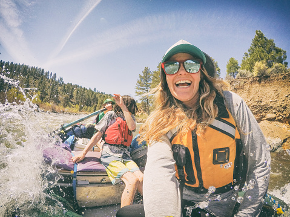

SUMMER PRICES
Enjoy trekking at Borneo tropical jungle, home of Dayak tribbe. You also can be interraction with Dayakpeople. The top in this tour is bamboo rafting adventure that very safety. So enjoy this tour. 2nd is Telaga Waja rafting in Karang Asem, and the 3rd is Melangit River rafting in Klungkung. Make it possible for you to enjoy different difficulty levels of white water rafting Bali, whether you are a beginner or an adrenaline junkie. Let's get wet and pump adrenaline with Bali rafting adventure program.
SPRING PRICES
All your imagination about Bali does not have to be stuck to the beach, because adventure awaits you in this paradise. Bali Rafting or also known as White water rafting bali is one of the most favorite activities that must be on your booked-list during your vacation in Bali. There are 3 options for white water rafting in Bali, the first is Ayung river rafting Ubud, the 2nd is Telaga Waja rafting in Karang Asem, and the 3rd is Melangit River rafting in Klungkung. Make it possible for you to enjoy different difficulty levels of white water rafting Bali, whether you are a beginner or an adrenaline junkie. Let's get wet and pump adrenaline with Bali rafting adventure program.

Come Run With Us!
Well see you tonight for free injury consults with a PT at 5:30pm and the community run at 6pm! Bring your lights and reflective gear for 3 or 5 miles along the river path. All paces are welcome. Rafting and whitewater rafting are recreational outdoor activities which use an inflatable raft to navigate a river or other body of water. This is often done on whitewater or different degrees of rough water. Dealing with risk is often a part of the experience.